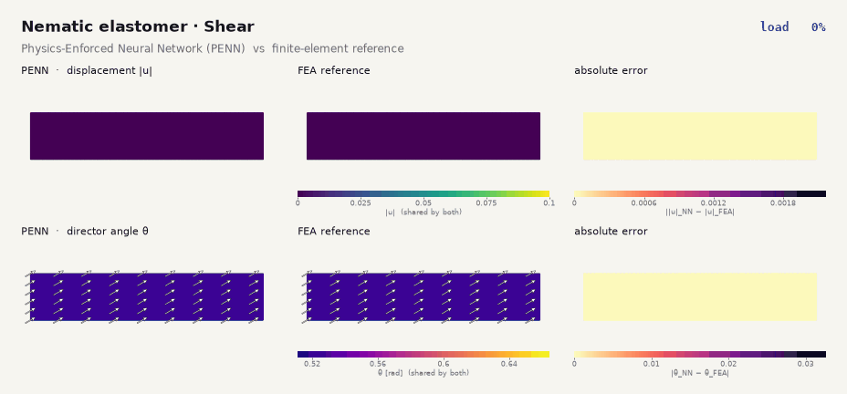
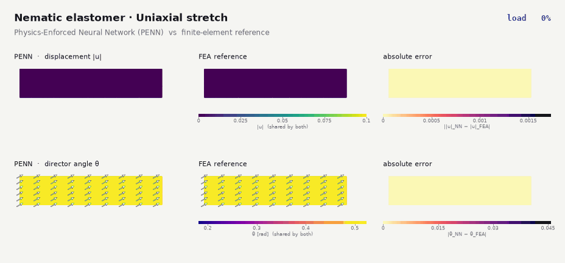
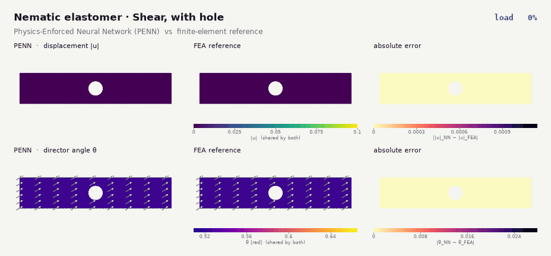

Soft Matter · Physical AI
Physics enforced
operator learning.
Neural networks and operator networks (DeepONets) trained on the total potential energy, with the physics built into the architecture, for liquid crystal elastomers whose deformation is coupled to an orientation (director) field, checked against finite-element reference solutions.
Nematic elastomers are rubber-like polymer networks coupled to an orientational order, so the deformation and the director field must be found together. This is the setting of the paper below, which formulates the problem for microstructured media and develops neural network and operator-learning solvers whose output is checked against necessary stability conditions[1]. The material is described by the following theory.
The problem: Cosserat elasticity with a unit director
The material is modeled as a Cosserat continuum with a single unit director. Two kinematic fields describe the body: the deformation \( \boldsymbol{x}=\boldsymbol{\chi}(\boldsymbol{X}) \) and the director \( \boldsymbol{d}(\boldsymbol{X}) \), subject to the constraint \( \boldsymbol{d}\cdot\boldsymbol{d}=1 \). The stored energy per unit reference volume depends on both fields and on the director gradient,
Frame invariance requires \( W(\boldsymbol{F},\boldsymbol{d},\nabla\boldsymbol{d})=W(\boldsymbol{Q}\boldsymbol{F},\boldsymbol{Q}\boldsymbol{d},\boldsymbol{Q}\nabla\boldsymbol{d}) \) for every rotation \( \boldsymbol{Q} \). With the generalized stresses \( \boldsymbol{P}=\partial W/\partial\boldsymbol{F} \), \( \boldsymbol{N}=\partial W/\partial\boldsymbol{d} \) and couple stress \( \boldsymbol{M}=\partial W/\partial\nabla\boldsymbol{d} \), this is equivalent to
Equilibrium is a stationary point of the total potential energy \( \mathcal{E}=\int W\,dV-\mathcal{L} \). Varying \( \boldsymbol{\chi} \) freely and \( \boldsymbol{d} \) subject to \( \boldsymbol{d}\cdot\delta\boldsymbol{d}=0 \) gives the balance of linear momentum and of director momentum,
with \( \boldsymbol{f},\boldsymbol{l} \) the body force and body couple. A network trained on \( \mathcal{E} \) is driven toward such a stationary point.
Constitutive model
For the planar simulations shown above, the energy is of neo-Hookean type with an anisotropic network metric, plus a Frank-type director-gradient term:
where \( \boldsymbol{D} \) is the initial director, \( \mu \) the shear modulus, \( \alpha \) the Frank modulus and \( \gamma \) a size-effect length. The corresponding stresses and couples are
Simulations
The problem is solved on a thin strip with four loading cases: shear and uniaxial stretch, each with and without a circular hole. The Physics-Enforced Neural Network (PENN) and the DeepONet are each compared with a finite-element (FEA) reference.
Physics-Enforced Neural Network (PENN)
A Physics-Enforced Neural Network represents the deformation and the director field with separate networks, builds the unit-length constraint on the director into the architecture, and is trained by minimizing the total potential energy of the system, with no solution data. Each animation shows the load ramp, with the network prediction, the finite-element reference and the pointwise error side by side: displacement magnitude on top, director angle below.



Operator learning: DeepONet
A DeepONet learns an operator, not a single solution. In the standard construction, a branch network encodes the input, here the load level, and a trunk network encodes the position in the body, and their combination gives the deformation and director fields at that position. After training, any load on the ramp is evaluated with one forward pass, so a single model covers the whole load ramp. The same four cases are shown below, with the DeepONet prediction, the finite-element reference and the pointwise error.


Animations are interpolated between the stored load steps for smooth playback. The reference in every panel is a finite-element solution of the same discretized problem. Work in progress.
Validating network output: three necessary conditions
Satisfying the balance laws is not enough: a stationary point can be a saddle or a maximum. At a stable equilibrium \( (\boldsymbol{\chi}_e,\boldsymbol{d}_e) \) the energy cannot be lowered by any admissible perturbation,
Choosing localized perturbations (a compactly supported displacement \( \boldsymbol{\Phi} \) and a director rotation built from an axial field \( \boldsymbol{w} \)) and shrinking their support to a point yields a hierarchy of conditions. They are necessary for any energy minimizer, whether it comes from finite elements, a neural network or an analytical solution, so a state that violates one cannot be a stable minimizer and can be rejected.
1 · Quasiconvexity
At every material point \( \boldsymbol{X}_0 \) (quantities with subscript \( 0e \) are evaluated at equilibrium there), for every compactly supported \( \boldsymbol{\Phi} \) and \( \boldsymbol{w} \) on any subdomain \( \mathcal{D} \),
This is the sharpest of the three, but it is an integral inequality over all admissible perturbations, so it cannot be checked directly on a computed solution. It is the theoretical parent of the two pointwise conditions below.
2 · Rank-one convexity
Restricting the perturbation to a laminate (a jump across a plane with normal \( \boldsymbol{T} \)) turns the integral into a pointwise inequality. For all vectors \( \boldsymbol{a},\boldsymbol{b} \) and \( \boldsymbol{T} \),
It says that the energy, as a function of the rank-one perturbation, lies above its tangent. A violation signals that a fine-scale laminate (a microstructure) would have lower energy than the computed state. It can be tested on a computed field by sampling \( \boldsymbol{a},\boldsymbol{b},\boldsymbol{T} \).
3 · Legendre–Hadamard inequality
Taking \( \boldsymbol{a}=\epsilon\boldsymbol{s} \), \( \boldsymbol{b}=\epsilon\boldsymbol{q} \) and letting \( \epsilon\to0 \) gives the second-order, local form. For all \( \boldsymbol{s},\boldsymbol{q},\boldsymbol{T} \),
with the moduli
evaluated at the equilibrium state. With strict inequality this is the strong ellipticity condition; its loss marks the onset of material instability such as shear bands. It is the cheapest of the three to evaluate because it needs only second derivatives of \( W \) at each point.
The three are ordered by strength: polyconvexity \( \Rightarrow \) quasiconvexity \( \Rightarrow \) rank-one convexity \( \Rightarrow \) Legendre–Hadamard. They are necessary, not sufficient: passing them does not prove a state is the global minimizer, but failing any one disqualifies it.
Applied to this model
For the energy above and unit vectors \( \boldsymbol{s} \) and \( \boldsymbol{T} \), the deformation modulus is
where \( \cos\lambda=\boldsymbol{s}\cdot\boldsymbol{d} \) and \( \cos\lambda_{0}=\boldsymbol{T}\cdot\boldsymbol{D} \). For the shape anisotropy \( r=2 \) used here this becomes
so the strong ellipticity condition, the strong form of the Legendre–Hadamard inequality,
is satisfied, and the chosen constitutive model and parameter set are strongly elliptic within the regime considered. Two consequences for validation:
- For this energy, Legendre–Hadamard holds a priori. Checking it on network output confirms that the output is an admissible state, but it cannot expose a poor solution by itself.
- The conditions become discriminating for energies that are not elliptic by construction, such as learned or data-driven constitutive models, and for the global quantities below.
What is checked on the computed solutions
For every stored trajectory (finite element, PENN and DeepONet), two computational checks are applied to the nodal solutions:
- Strong ellipticity at every Gauss point: the smallest eigenvalue of the acoustic tensor built from the deformation modulus \( \mathscr{M} \), scanned over all in-plane directions \( \boldsymbol{T} \), with the director held at its local value.
- Second variation at every load step: the smallest eigenvalue of the reduced Hessian of the discretized total energy with respect to the free displacement and director degrees of freedom. A positive value means a strict local minimizer of the discrete problem rather than a saddle.
All stored trajectories pass both checks: positive acoustic-tensor eigenvalue at every Gauss point and no negative Hessian eigenvalues. A passing check means the states are consistent with these necessary conditions and are strict local minimizers of the discretized energy. It does not mean the networks match the finite-element solution; that is what the animations above show, and both the PENN and the DeepONet remain visibly less accurate than FEA, especially in director angle. The Legendre–Hadamard check implemented here covers the deformation block with the director held fixed; the fully coupled form above is satisfied analytically for this model but is not separately evaluated numerically.
Reference
[1] M. Shirani, P. H. Gueldner, M. Khidoyatov, J. L. Warren, F. Ninno, Physics-Consistent Neural Networks for Learning Deformation and Director Fields in Microstructured Media with Loss-Based Validation Criteria, arXiv:2603.06939 (2026). arxiv.org/abs/2603.06939 ↗